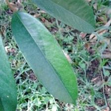
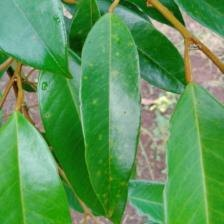
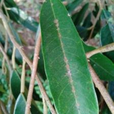
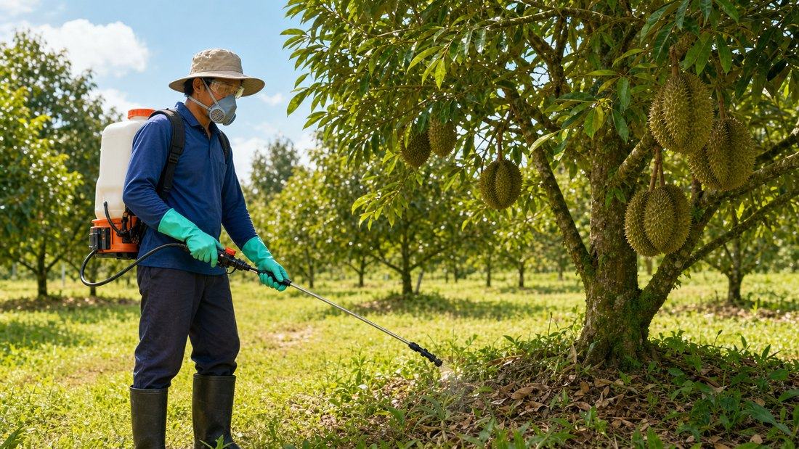

Smart Weather Warning
ជ្រើសរើសទីតាំងចម្ការរបស់អ្នកជាមុនសិន។
ចាប់ផ្តើមពិនិត្យស្លឹកទុរេន
ថតរូបថ្មី ឬនាំចូលរូបស្លឹកពីទូរស័ព្ទ។
ប្រើកាមេរ៉ាទូរស័ព្ទ
បែងចែក ១០ ប្រភេទ
សកម្មភាពបន្ទាប់
ជួយអ្នកអានតិច
PDF និងវីដេអូ
របៀបប្រើ App ជាមួយរូបភាព
មើលតាមរូបភាពខាងក្រោម ដើម្បីពិនិត្យស្លឹកទុរេនបានលឿន និងងាយស្រួល។

1ថត ឬនាំចូលរូបស្លឹក
ជ្រើសរើសស្លឹកមួយសន្លឹកដែលឃើញចំណុច ឬស្នាមច្បាស់។

2មើលរូបមុនពិនិត្យ
បើរូបមិនច្បាស់ សូមថតម្ដងទៀតមុនចុចពិនិត្យ។

3 លទ្ធផល AI ភាពជឿជាក់ 93%ទទួលលទ្ធផល AI
App បង្ហាញឈ្មោះជំងឺ ភាពជឿជាក់ និងសកម្មភាពបន្ទាប់។

4ស្តាប់ និងធ្វើតាមការណែនាំ
ប្រើសំឡេងអាន ហើយពិនិត្យថ្នាំ និងសុវត្ថិភាពមុនបាញ់។
មជ្ឈមណ្ឌលចំណេះដឹង
រោគសញ្ញា និងការណែនាំចម្ការ
មើលឧទាហរណ៍ជំងឺ សកម្មភាពថែទាំ និងអ្វីត្រូវប្រុងប្រយ័ត្នពេលអាកាសធាតុសើម។
រោគសញ្ញាទុរេន
ឧទាហរណ៍ស្លឹក ផ្លែ ដើម និងមគ្គុទ្ទេសក៍បន្ថែមសម្រាប់បញ្ហាសំខាន់ៗក្នុងចម្ការ។
អនុសាសន៍ & ការព្យាបាល
-
សម្អាតស្លឹកឆ្លង
ដកស្លឹកខូចចេញ និងកុំទុកស្លឹកជ្រុះក្រោមដើម។
-
កាត់មែកឲ្យមានខ្យល់
បន្ថយសំណើមក្នុងគុម្ព ដើម្បីកាត់បន្ថយការរាលដាល។
-
ពិនិត្យឲ្យប្រាកដ
ថតច្រើនស្លឹក និងសួរអ្នកជំនាញ មុនប្រើថ្នាំ។
-
ប្រើថ្នាំទទួលខុសត្រូវ
អានស្លាក/QR ពាក់ PPE និងគោរព PHI/REI។
កំណត់ត្រា និងរបាយការណ៍
របាយការណ៍ពិនិត្យស្លឹក
មើលរូបដើម លទ្ធផល AI ភាពជឿជាក់ ថ្ងៃម៉ោង ការណែនាំព្យាបាល និងកំណត់ចំណាំចម្ការ។
របាយការណ៍ថ្មីៗ
ចុចលើរបាយការណ៍ណាមួយ ដើម្បីមើលលម្អិត ទាញយកជា PDF ឬចែករំលែក។
មិនទាន់មានការពិនិត្យ។
Remote Irrigation
បញ្ជា និងតាមដានប្រព័ន្ធទឹក
មើលស្ថានភាពទឹក បើក/បិទ pump និង valve ពីទូរស័ព្ទ។ ទិន្នន័យនេះរៀបចំសម្រាប់ភ្ជាប់ ESP32 តាម MQTT Cloud។
Online
កំពុងស្រោច
08:42
Zone 2
នៅសល់ 8 នាទី • Pump 2 បើក • Valve 1,3,8 បើក
គ្រោងការជូនដំណឹង
0 alertsDevice profile
Loading profile...
Remote Control Safety
- Owner login only for pump/valve control.
- STOP button must always be visible in manual and auto mode.
- Alert when tank is low, node is offline, or signal is weak.
Data from system
Main ESP32 sends live status to cloud. Soil nodes can send ESP-NOW to the main ESP32 first, so the phone does not need to be near the farm.
AI ចម្ការ
កំពុងពិនិត្យ
សួរអំពីចម្ការទុរេន
ពិនិត្យស្ថានភាពអ៊ីនធឺណិត...
AI: ខ្ញុំត្រៀមស្តាប់សំណួរទូទៅអំពីចម្ការទុរេន។ អ្នកអាចសួរអំពីទឹក ជី ជំងឺ សត្វល្អិត អាកាសធាតុ ឬលទ្ធផលរូបភាព។
មុខងារដែលសួរញឹកញាប់
SMART CHOMKA MARKET
ទីផ្សារកសិករ
ទុរេន ជី ថ្នាំ និងឧបករណ៍សម្រាប់ចម្ការរបស់អ្នក
កំណែសាកល្បង៖ ទំនិញរក្សាទុកតែក្នុងឧបករណ៍នេះ។ មិនទាន់មានការផ្សាយទៅអ្នកប្រើផ្សេង ការបញ្ជាទិញ ឬការទូទាត់ប្រាក់ទេ។
មើលអ្នកផ្គត់ផ្គង់ទាំង 4
ជ្រើសរើសផលិតផល
បញ្ជីយោងពីគេហទំព័រអ្នកផ្គត់ផ្គង់។ មិនទាន់បានបញ្ជាក់ភាពជាដៃគូទេ។
ឈ្មោះ រូបភាព និងព័ត៌មានផលិតផលយោងពីគេហទំព័រអ្នកផ្គត់ផ្គង់នីមួយៗ។ បញ្ជីដំបូងនេះមិនមែនជាកាតាឡុកទាំងមូលទេ។ តម្លៃ ស្តុក និងការដឹកជញ្ជូនត្រូវបញ្ជាក់ជាមួយអ្នកផ្គត់ផ្គង់។
ប្រៀបធៀបតម្លៃ ពូជ ថ្ងៃប្រមូលផល និងទីតាំង ដើម្បីជ្រើសរើសអ្នកលក់ដែលសមស្រប។
គណនី
គ្រប់គ្រងព័ត៌មានគណនី និងការកំណត់។
មិនទាន់មានព័ត៌មានកសិករ
បញ្ចូលឈ្មោះ និងលេខទូរស័ព្ទ រួចចុចរក្សាទុក។
0
ចំនួនការពិនិត្យ
សរុប
0
ចំនួនរបាយការណ៍
បានរក្សាទុក
សកម្មភាពចុងក្រោយ
មិនទាន់មាន
ចាប់ផ្តើមពិនិត្យស្លឹក
ព័ត៌មានកសិកម្ម
- ឈ្មោះចម្ការ
- Smart Chomka Durian Farm
- ខេត្ត / ស្រុក
- ជ្រើសទីតាំងអាកាសធាតុ
- ប្រភេទដំណាំ
- Durian
- ប្រភេទទុរេន
- Monthong
- ចំនួនដើមឈើ
- 120 ដើម
- ផ្ទៃដីសរុប
- 2.5 ហិកតា
- អាយុដើមជាមធ្យម
- 4 ឆ្នាំ
- ប្រព័ន្ធទឹក
- ទឹកអូតូ / IoT